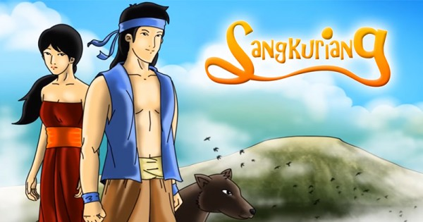
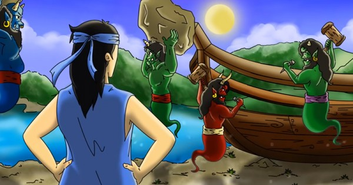

Posting Teratas
Sangkuriang adalah legenda yang sangat populer dan berasal dari Jawa Barat
Alkisah pada jaman dahulu kala seekor babi tengah melintas di sebuah hutan belantara. Babi hutan itu sedang merasa kehausan di tengah panasnya terik matahari. Pada saat dia mencari-cari mata air, dia melihat ada air yang tertampung di pohon keladi hutan. Segera diminumnya air itu untuk melepas dahaga. Tanpa disadarinya air itu adalah air seni Raja Sungging Perbangkara. Karena kesaktian Raja Sungging Perbangkara, babi hutan itu pun mengandung setelah meminum air seninya. Sembilan bulan kemudian si babi hutan melahirkan seorang bayi perempuan. Raja Sungging Perbangkara mengetahui perihal adanya bayi perempuan yang terlahir karena air seninya itu. Ia pun pergi ke hutan untuk mencarinya. Ditemukannya bayi prempuan itu. Dia pun memberinya nama Dayang Sumbi dan membawanya pulang ke istana kerajaan.
Dayang Sunbi tumbuh menjadi perempuan yang sangat cantik wajahnya. Serasa tak terbilang jumlah raja, p angeran dan bangsawan yang berkehendak memperistri anak perempuan Raja Sungging Perbangkara itu. Namun, semua pinangan itu di tolak Dayang Sumbi dengan halus. Sama sekali tidak diduga oleh Dayang Sumbi , mereka yang ditolak pinangannya itu saling berperang sendiri untuk memperebutkan dirinya.
 Dayang Sumbi sangat bersedih mengetahui kenyataan bahwa para pangeran, raja dan bangsawan yang ditolaknya saling melakukan peperangan. Dia pun memohon kepada Raja Sungging Perbangkara untuk mengasingkan diri. Sang Raja akhirnya mengijinkan anaknya tersebut untuk mengasingkan diri. Dayang Sumbi mengasingkan diri di sebuah bukit ditemani oleh seekor anjing jantan bernama si tumang. Untuk mengisi waktu luangnya selama dalam pengasingan, Dayang Sumbi pun menenun. Alkisah, ketika Dayang Sumbi sedang menenun, peralatan tenunannya terjatuh. Ketika itu Dayang Sumbi merasa malas untuk mengambilnya. Terlontarlah ucapan yang tidak terlalu disadarinya.” Siapapun juga yang bersedia mengambilkan peralatan tenunku yang terjatuh, seandainya itu lelaki akan kujadikan suami, jika dia perempuan dia akan kujadikan saudara.”
Tak disangka si tumang mengambil peralatan tenun yang terjatuh itu dan memberikannya kepada Dayang Sumbi.Tidak ada yang dapat diperbuat Dayang Sumbi selain memenuhi ucapannya. Dia menikah dengan Si Tumang yang ternyata titisan dewa.Si Tumang adalah dewa yang dikutuk menjadi hewan dan dibuang ke bumi. Beberapa bulan setelah menikah, Dayang Sumbi pun mengandung dan melahirkan seorang bayi laki-laki. Dayang Sumbi memberinya nama Sangkuriang.
Waktu terus berlalu. Beberapa tahun kemudian terlewati. Sangkuriang telah tumbuh menjadi seorang pemuda yang tampan wajahnya. Gagah. Tubuhnya kuat dan kekar. Sakti mandraguna pula anak Dayang Sumbi ini. Sejak kecil Sangkuriang telah senang berburu. Setiap kali melakukan perburuan di hutan. Sangkuriang senantiasa ditemani oleh si tumang. Sama sekali Sangkuriang tidak tahu bahwa si Tumang adalah ayah kandungnya.
Pada suatu hari Sangkuriang dengan di temani Si Tumang kembali meakukan perburuan di hutan. Sangkuriang berniat mencari kijang karena ibunya sangat menghendaki memakan hati kijang. Setelah beberapa saat berada di dalam hutan, Sangkuriang melihat seekor kijang yang tengah merumput di balik semak belukar. Sangkuriang memerintahkan si tumang untuk mengejar kijang itu Sangat aneh, si Tumang yang biasanya penurut, ketika itu tidak menuruti perintahnya. Sangkuriang menjadi marah. Katanya.” Jika engkau tetap tidak menuruti perintahku, niscaya aku akan mebunuhmu.” Ancaman Sangkuriang seakan tidak dipedulikan si Tumang. Karena jengkel dan marah, Sangkuriang lantas membunuh si Tumang. Hati anjing hitam itu diambilnya dan dibawanya pulang ke rumah. Sangkuriang memberikan hati si Tumang kepada ibunya untuk dimasak. Tanpa disadari Dayang Sumbi bahwa hati yang diberikan anaknya adalah hati suaminya. Dia kemudian memasak dan memakan hati itu. Maka, tak terperikan amarah Dayang Sumbi kepada Sangkuriang ketika dia tahu hati yang dimakannya adalah hati si Tumang. Dia lalu meraih gayung yang terbuat dari tempurung kelapa dan memukul kepala Sangkuriang, hingga kepala Sangkuriang terluka.
Sangkuriang sangat marah dan sakit hati dengan perlakuan ibunya itu. Menurutnya, Ibunya lebih menyayangi si Tumang dibandingkan dirinya. Maka, tanpa pamit kepada Dayang Sumbi ibunya, Sangkuriang lantas pergi mengembara ke arah timur. Dayang Sumbi sangat menyesal setelah mengetahui kepergian Sangkuriang anaknya. Dia pun bertapa dan memohon ampun kepada para dewa atas kesalahan yang diperbuatnya. Para dewa mendengar permintaan Dayang Sumbi, mereka menerima permintaan maaf itu dan mengaruniakan Dayang Sumbi kecantikan abadi.
Syahdan, Sangkuriang terus mengembara tanpa tujuan yang pasti. Dalam pengembaraanya Sangkuriang terus menambah kesaktiannya dengan berguru kepada orang-orang sakti yang ditemuinya selama pengembaraan. Bertahun-tahun Sangkuriang mengembara tanpa disadari dia kembali ke tempat dimana dia dahulu dilahirkan. Sangkurian terpesona dengan kecantikan Dayang Sumbi yang abadi, dia tidak menyadari bahwa perempuan cantik yang ditemuinya di hutan adalah ibu kandungnya sendiri. Hal yang sama terjadi juga pada Dayang Sumbi yang tidak menyadari pemuda gagah yang sakti itu adalah Sangkuriang anaknya. Karena saling jatuh cinta mereka merencenakan untuk menikah.
Sebelum pernikahan dialngsungkan Sangkuriang berniat untuk berburu. Dayang Sumbi membantu Sangkuriang mengenakan penutup kepala. Ketika itulah dayang Sumbi melihat luka di kepala calon suaminya. Teringatlah dia pada anak lelakinya yang telah meninggalkannya. Dia sangat yakin pemuda gagah itu tidak lain adalah Sangkuriang anaknya.
Dayang Sumbi kemudian menjelaskan bahwa dai sesungguhnya adalah ibu kandung dari Sangkuriang. Oleh karena itu dia tidak bersedia menikah dengan anak kandungnya tersebut. Namun, Sangkuriang yang telah dibutakan oleh hawa nafsu tidak memperdulikan penjelasan Dayang Sumbi, dia tetap bersikukuh akan menikahi Dayang Sumbi. “Jika memang begitu kuat keinginanmu untuk menikahiku, aku mau engkau memenuhi satu permintaanku” Kata Dayang Sumbi “Apa permintaan yang engkau kehendaki.” Tantang Sangkuriang
Dayang Sumbi mengajukan syarat yang laur biasa berat yaitu dia ingi sungai citarum dibendung untuk dibuat danau, dan didalam danau itu ada perahu besar.” Semua itu harus dapat engkau selesaikan dalam waktu satu malam.” Ucap Dayang Sumbi.” Sebelum fajar terbit, kedua permintaanku itu harus telah selesai engaku kerjakan.” Tanpa ragu Sangkuriang menyanggupi permintaan dari Dayang Sumbi.” Baiklah, aku akan memenuhi permintaanmu.”
Sangkuriang segera bekerja mewujudkan permintaan Dayang sumbi. Pertama kali dia menebang pohon besar untuk dibuatnya sebuah perahu. Cabang dan ranting pohon yang tidak dibutuhkannya ditumpukan. Tumpukan cabang dan ranting pohon itu dikemudian hari menjelma menjadi gunung Burangrang.Begitu pula tunggul pohpon itu kemudian berubah menjadi sebuah gunung yang lebih dikenal gunung bukit tinggul.
Perahu besar itu akhirnya selesai dibuat Sangkuriang. Pemuda Sakti itu lantas berniat membendung aliran sungai Citarum yang deras untuk dibuat sebuah danau. Sangkuriang kemudian memanggi para makhluk halus untuk membantunya mewujudkan permintaan Dayang sumbi. Semua yang dilakukan Sangkuriang diketahii oleh Dayang Sumbi. Terbit kecemasan dalam hati Dayang Sumbi ketika melihat pekerjaan Sangkuriang sebentar lagi selesai. Dia harus menggagalkan pekerjaan Sangkuriang agar pernikahan dengan anak kandungnya itu tidak terlaksana. Dia pun memohon pertolongan dari para Dewa. Setelah berdoa, Dayang Sumbi mendapatkan petunjuk. Dayang Sumbi lantas menebarkan boeh rarang (kain putih hasil tenunan). Dia juga memkasa ayam jantan berkokok disaat waktu masih malam. Para makhluk halus sangat ketakutan ketika mengetahui fajar telah tiba. Mereka berlari dan menghilang kesegala penjuru. Mereka meninggalkan pekerjaannya membuat danau dan perahu yang belum selesai.
Sangkuriang sangat marah. Dia merasa Dayang Sumbi telah berlaku curang kepadanya. Ida sangat yakin jika fajar sesungguhnya belum tiba. Dia merasa masih tersedia waktu baginya untuk menyelesaikan pekerjaan. Dengan kemarahan tinggi, Sangkuriang lantas menjebol bendungan di Sanghyang Tikoro. Sumbat aliran citarum lantas dilemparkannya ke arah timur yang kemudian menjelma menjadi gunung Manglayang. Air yang semula memenuhi danau itu pun menjadi surut. Serasa belum reda kemarahannya. Sangkuriang lantas menendang perahu besar yang telah dibuatnya hingga terlempat jauh dan jatuh tertelungkup. M enjelmalah perahu besar itu menjadi sebuah gunung yang kemudian di sebut gunung Tangkuban Perahu.
Kemarahan Sangkuriang belum reda. Dia mengetahui, semua itu sesungguhnya adalah siasat dari Dayang Sumbi untuk menggagalkan pernikahan dengannya. Dengan kemarahan yang terus meluap, Dayang sumbi pun dikejarnya. Dayang sumbi yang ketakutan terus berlari untuk menghindar hingga akhirnya menghilang di sebuah bukit. Bukit itu kemudian menjelma menjadi gunung Putri. Sedangkan Sangkuriang yang tidak berhasil menemukan Dayang Sunbi akhirnya menghilang ke alam gaib. “Pesan Moral dari Legenda Asal Muasal Gunung Tangkuban Perahu : Kisah Sangkuriang adalah Bersikaplah untuk jujur karena kejujuran akan membawa kebaikan dan kebahagiaan di kemudian hari. Perbuatan curang akan merugikan diri sendiri serta bisa mendatangkan musibah bagi diri sendiri ataupun orang lain.”